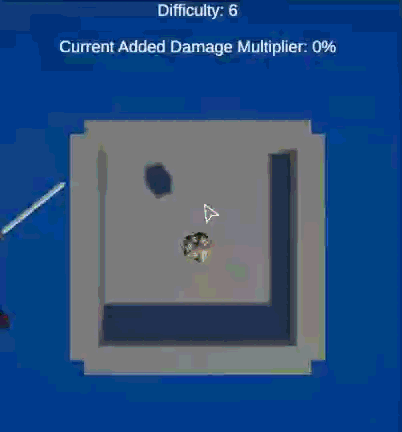
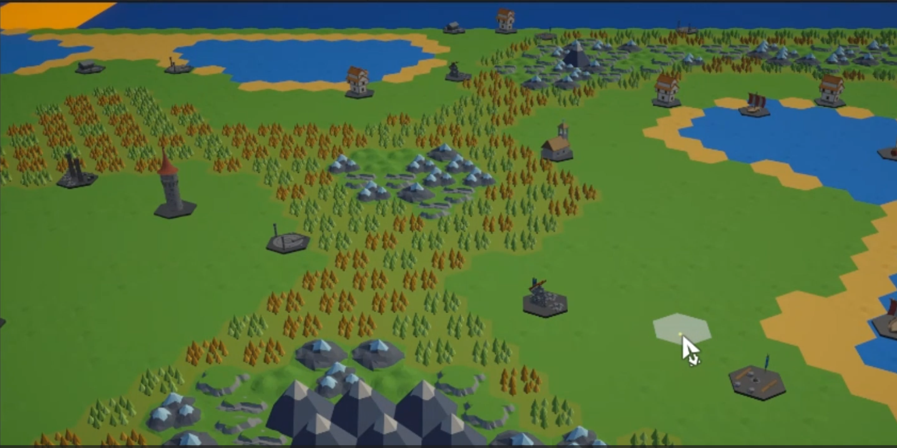
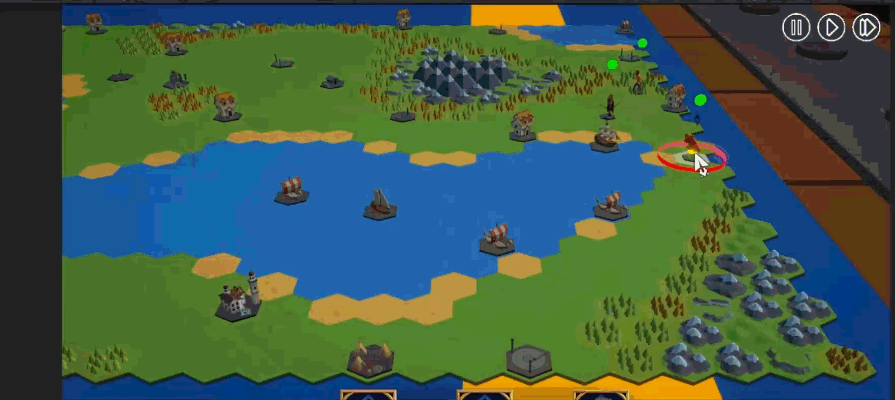
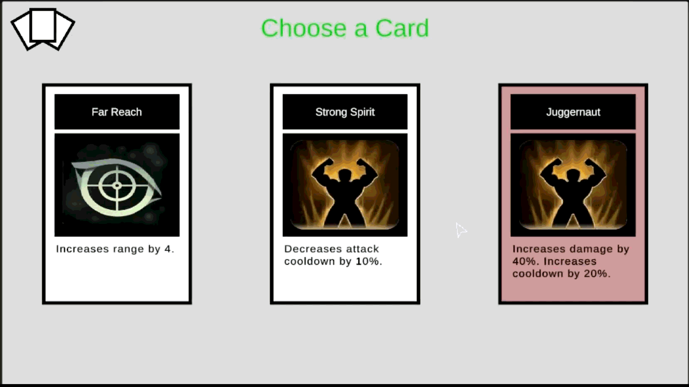

Torchpunk: Dices & Cards
Summary
During my internship at Overflow Interactive, I worked as a Game Developer on the development of an original indie title: "Torchpunk: Dices & Cards".
Over the course of 486 development hours in a remote setting, I applied agile methodologies (ScrumBan) to build a scalable and modular roguelike strategy game using Unity Engine 6.0 and C#.
My primary focus was on bridging the gap between academic theory and professional application, implementing complex gameplay systems such as procedural generation, A* pathfinding, and physics-based interactions, while ensuring the codebase remained accessible for non-programmers and to rapid iteration.
Contributions
The core challenge of this project was the implementation of a scalable product featuring complex real-time strategy functionalities.
My contributions focused on developing essential modules: including combat, movement, and User Interface (UI)—with a strict emphasis on writing modular, scalable, and reusable code.
By leveraging architectural patterns and robust scripting, I aimed to facilitate contributions from other team members, such as game designers, without requiring them to touch or know the core code. The following sections detail the technical implementation of the specific modules I developed.
Dice Throw System
To implement the core mechanic of the game, I developed a physics-based dice rolling system that balances visual realism with logical accuracy.
- 3D Physics Integration: Utilized Unity's Rigidbody component to simulate realistic throws, applying random force and torque to the dice to ensure unpredictable results.
- Face Detection Logic: Implemented a detection algorithm that calculates the result once the die comes to a rest. The system compares the Y-axis height of each face; the face with the highest Y value is determined to be the one facing up.
- Event-Driven Architecture: The system uses C# Events to broadcast the result. This approach successfully decouples the game logic from the animation, ensuring that the gameplay state updates cleanly only after the visual action is resolved.

Procedural Map Generation
I created a dynamic environment system that generates a unique hexagonal world for every playthrough, utilizing advanced coordinate systems and noise algorithms.
- Hexagonal Grid System: Implemented a grid using axial coordinates, allowing for precise positioning and neighbor calculation required for a strategy game layout.
- Perlin Noise Implementation: Utilized Perlin Noise algorithms to generate distinct "Height" and "Humidity" maps. These values are combined to define specific biomes (e.g., Forest, Desert, Water) procedurally across the map.
- Structure Population: The system automatically populates the map with structures based on probability rules and optimal biome placement, ensuring a balanced gameplay landscape.

A* Pathfinding (Navigation)
I implemented an intelligent navigation system to handle the strategic movement of units across the hexagonal grid.
- A* Algorithm: Developed a custom A* (A-Star) algorithm to calculate the most efficient path for units, using the total cost formula f(n)=g(n)+h(n).
-
Heuristic Calculation: The system calculates:
- g(n): The exact cost from the start node to the current node.
- h(n): The heuristic estimate (hexagonal distance) from the current node to the destination.
- Real-Time Adaptation: The pathfinding module is capable of avoiding dynamic obstacles and recalculating routes in real-time, ensuring units navigate the procedural environment intelligently.

Modular Reward System
To support the roguelike elements of the game, I designed a reward system focused on scalability and ease of content creation for designers.
- Scriptable Objects: Each reward card is created as an independent data asset (Scriptable Object). This allows game designers to create new items with varying effects and parameters directly in the editor without modifying the source code.
- Strategy Pattern Implementation: I utilized the Strategy Pattern by creating an abstract base class, CardEffect. Specific reward behaviors implement their own Execute() logic, making the system highly extensible for future ability additions.
- Dynamic UI: The interface is reactive, automatically adapting its visuals and text to match the data contained within the selected reward object.
